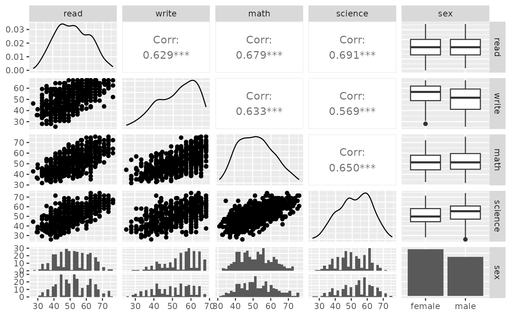
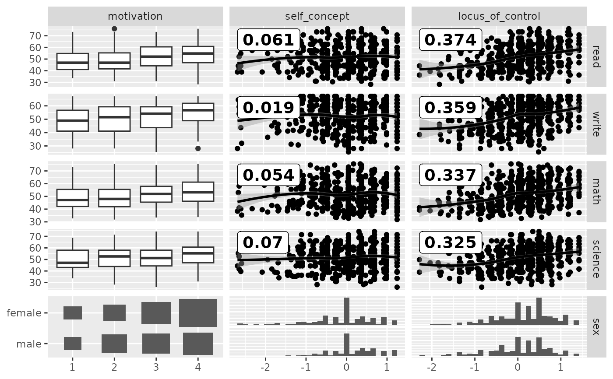
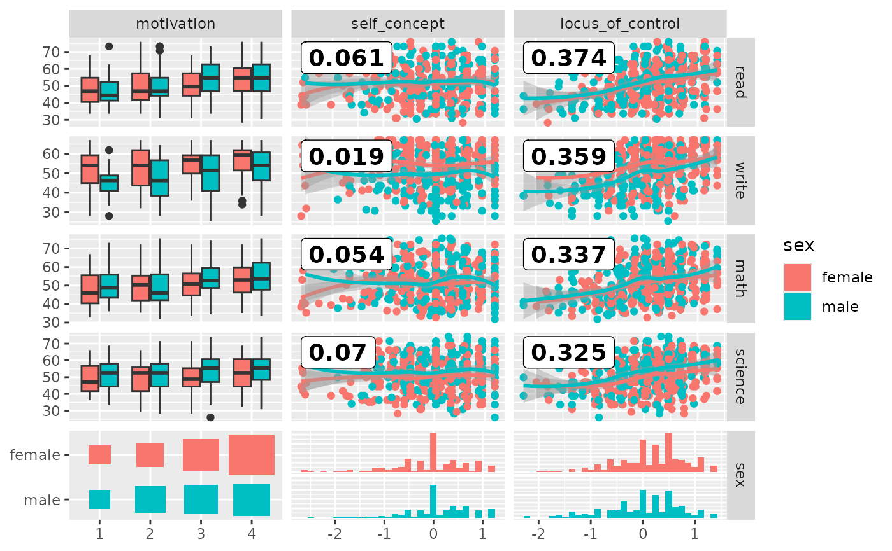
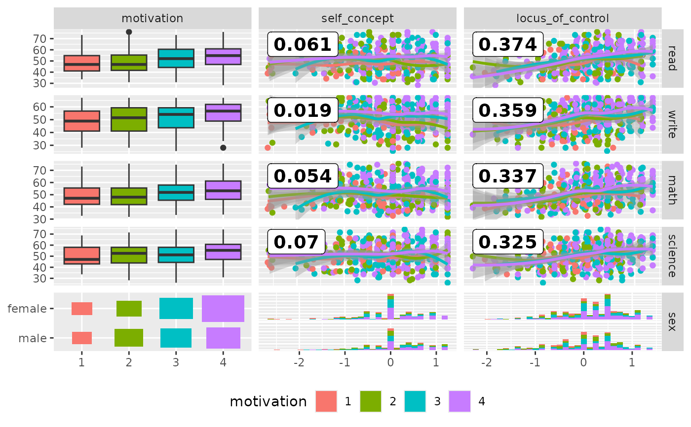

Make a matrix of plots with a given data set with two different column sets
ggduo( data, mapping = NULL, columnsX = 1:ncol(data), columnsY = 1:ncol(data), title = NULL, types = list(continuous = "smooth_loess", comboVertical = "box_no_facet", comboHorizontal = "facethist", discrete = "count"), axisLabels = c("show", "none"), columnLabelsX = colnames(data[columnsX]), columnLabelsY = colnames(data[columnsY]), labeller = "label_value", switch = NULL, xlab = NULL, ylab = NULL, showStrips = NULL, legend = NULL, cardinality_threshold = 15, progress = NULL, xProportions = NULL, yProportions = NULL, legends = stop("deprecated") )
Arguments
| data | data set using. Can have both numerical and categorical data. |
|---|---|
| mapping | aesthetic mapping (besides |
| columnsX, columnsY | which columns are used to make plots. Defaults to all columns. |
| title, xlab, ylab | title, x label, and y label for the graph |
| types | see Details |
| axisLabels | either "show" to display axisLabels or "none" for no axis labels |
| columnLabelsX, columnLabelsY | label names to be displayed. Defaults to names of columns being used. |
| labeller | labeller for facets. See |
| switch | switch parameter for facet_grid. See |
| showStrips | boolean to determine if each plot's strips should be displayed. |
| legend | May be the two objects described below or the default
|
| cardinality_threshold | maximum number of levels allowed in a character / factor column. Set this value to NULL to not check factor columns. Defaults to 15 |
| progress |
|
| xProportions, yProportions | Value to change how much area is given for each plot. Either |
| legends | deprecated |
Details
types is a list that may contain the variables
'continuous', 'combo', 'discrete', and 'na'. Each element of the list may be a function or a string. If a string is supplied, If a string is supplied, it must be a character string representing the tail end of a ggally_NAME function. The list of current valid ggally_NAME functions is visible in a dedicated vignette.
- continuous
This option is used for continuous X and Y data.
- comboHorizontal
This option is used for either continuous X and categorical Y data or categorical X and continuous Y data.
- comboVertical
This option is used for either continuous X and categorical Y data or categorical X and continuous Y data.
- discrete
This option is used for categorical X and Y data.
- na
This option is used when all X data is
NA, all Y data isNA, or either all X or Y data isNA.
If 'blank' is ever chosen as an option, then ggduo will produce an empty plot.
If a function is supplied as an option, it should implement the function api of function(data, mapping, ...){#make ggplot2 plot}. If a specific function needs its parameters set, wrap(fn, param1 = val1, param2 = val2) the function with its parameters.
Examples
# small function to display plots only if it's interactive p_ <- GGally::print_if_interactive data(baseball, package = "plyr") # Keep players from 1990-1995 with at least one at bat # Add how many singles a player hit # (must do in two steps as X1b is used in calculations) dt <- transform( subset(baseball, year >= 1990 & year <= 1995 & ab > 0), X1b = h - X2b - X3b - hr ) # Add # the player's batting average, # the player's slugging percentage, # and the player's on base percentage # Make factor a year, as each season is discrete dt <- transform( dt, batting_avg = h / ab, slug = (X1b + 2*X2b + 3*X3b + 4*hr) / ab, on_base = (h + bb + hbp) / (ab + bb + hbp), year = as.factor(year) ) pm <- ggduo( dt, c("year", "g", "ab", "lg"), c("batting_avg", "slug", "on_base"), mapping = ggplot2::aes(color = lg) ) # Prints, but # there is severe over plotting in the continuous plots # the labels could be better # want to add more hitting information p_(pm)# address overplotting issues and add a title pm <- ggduo( dt, c("year", "g", "ab", "lg"), c("batting_avg", "slug", "on_base"), columnLabelsX = c("year", "player game count", "player at bat count", "league"), columnLabelsY = c("batting avg", "slug %", "on base %"), title = "Baseball Hitting Stats from 1990-1995", mapping = ggplot2::aes(color = lg), types = list( # change the shape and add some transparency to the points continuous = wrap("smooth_loess", alpha = 0.50, shape = "+") ), showStrips = FALSE ) p_(pm)# Use "auto" to adapt width of the sub-plots pm <- ggduo( dt, c("year", "g", "ab", "lg"), c("batting_avg", "slug", "on_base"), mapping = ggplot2::aes(color = lg), xProportions = "auto" ) p_(pm)# Custom widths & heights of the sub-plots pm <- ggduo( dt, c("year", "g", "ab", "lg"), c("batting_avg", "slug", "on_base"), mapping = ggplot2::aes(color = lg), xProportions = c(6, 4, 3, 2), yProportions = c(1, 2, 1) ) p_(pm)# Example derived from: ## R Data Analysis Examples | Canonical Correlation Analysis. UCLA: Institute for Digital ## Research and Education. ## from http://www.stats.idre.ucla.edu/r/dae/canonical-correlation-analysis ## (accessed May 22, 2017). # "Example 1. A researcher has collected data on three psychological variables, four # academic variables (standardized test scores) and gender for 600 college freshman. # She is interested in how the set of psychological variables relates to the academic # variables and gender. In particular, the researcher is interested in how many # dimensions (canonical variables) are necessary to understand the association between # the two sets of variables." data(psychademic) summary(psychademic)#> locus_of_control self_concept motivation read #> Min. :-2.23000 Min. :-2.620000 Length:600 Min. :28.3 #> 1st Qu.:-0.37250 1st Qu.:-0.300000 Class :character 1st Qu.:44.2 #> Median : 0.21000 Median : 0.030000 Mode :character Median :52.1 #> Mean : 0.09653 Mean : 0.004917 Mean :51.9 #> 3rd Qu.: 0.51000 3rd Qu.: 0.440000 3rd Qu.:60.1 #> Max. : 1.36000 Max. : 1.190000 Max. :76.0 #> write math science sex #> Min. :25.50 Min. :31.80 Min. :26.00 Length:600 #> 1st Qu.:44.30 1st Qu.:44.50 1st Qu.:44.40 Class :character #> Median :54.10 Median :51.30 Median :52.60 Mode :character #> Mean :52.38 Mean :51.85 Mean :51.76 #> 3rd Qu.:59.90 3rd Qu.:58.38 3rd Qu.:58.65 #> Max. :67.10 Max. :75.50 Max. :74.20#> [1] "locus_of_control" "self_concept" "motivation"#> [1] "read" "write" "math" "science" "sex"## Within correlation p_(ggpairs(psychademic, columns = psych_variables))#>#>p_(ggpairs(psychademic, columns = academic_variables))#>#>#>#>## Between correlation loess_with_cor <- function(data, mapping, ..., method = "pearson") { x <- eval_data_col(data, mapping$x) y <- eval_data_col(data, mapping$y) cor <- cor(x, y, method = method) ggally_smooth_loess(data, mapping, ...) + ggplot2::geom_label( data = data.frame( x = min(x, na.rm = TRUE), y = max(y, na.rm = TRUE), lab = round(cor, digits = 3) ), mapping = ggplot2::aes(x = x, y = y, label = lab), hjust = 0, vjust = 1, size = 5, fontface = "bold", inherit.aes = FALSE # do not inherit anything from the ... ) } pm <- ggduo( psychademic, rev(psych_variables), academic_variables, types = list(continuous = loess_with_cor), showStrips = FALSE ) suppressWarnings(p_(pm)) # ignore warnings from loess#>#># add color according to sex pm <- ggduo( psychademic, mapping = ggplot2::aes(color = sex), rev(psych_variables), academic_variables, types = list(continuous = loess_with_cor), showStrips = FALSE, legend = c(5,2) ) suppressWarnings(p_(pm))#>#>#># add color according to sex pm <- ggduo( psychademic, mapping = ggplot2::aes(color = motivation), rev(psych_variables), academic_variables, types = list(continuous = loess_with_cor), showStrips = FALSE, legend = c(5,2) ) + ggplot2::theme(legend.position = "bottom") suppressWarnings(p_(pm))#>#>#>